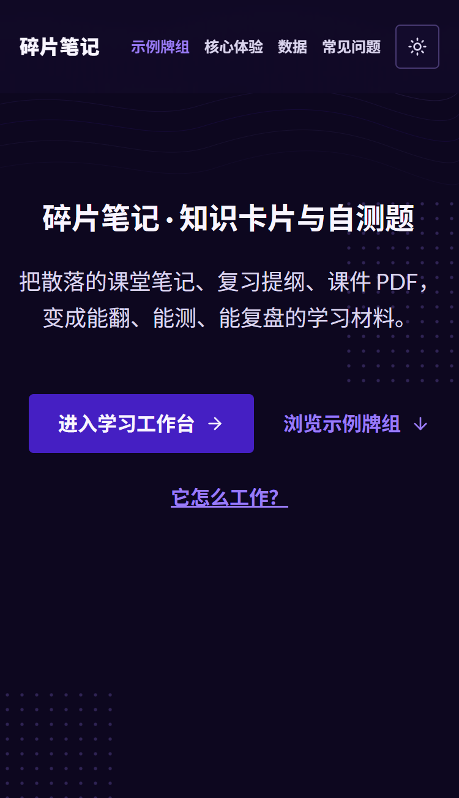
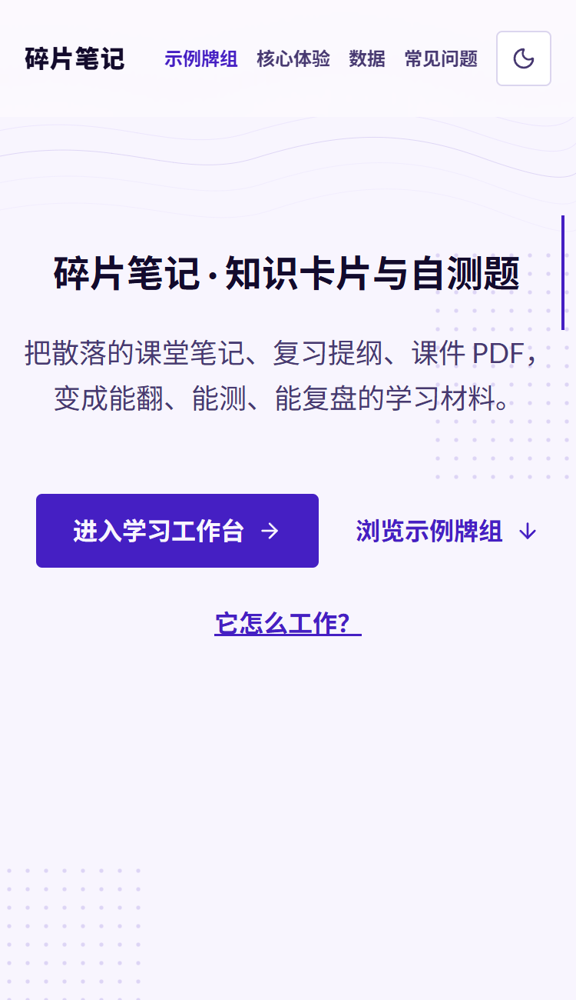
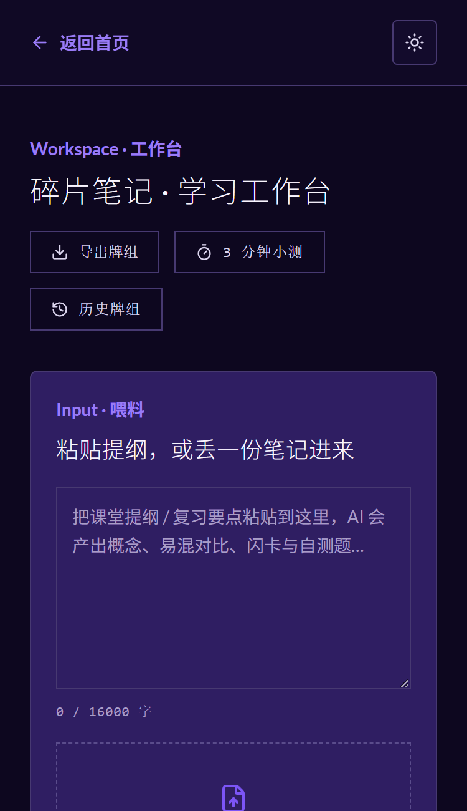
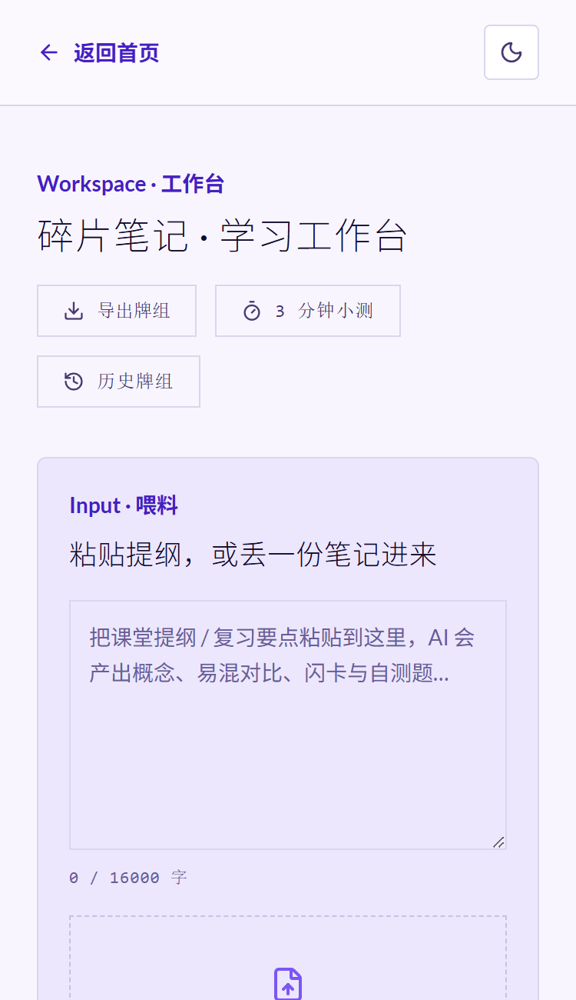

CHANGELOG · 2026-11-18
本次以 GitHub 上游 main 最新提交 420548b（zws.im 风格新首页）为基线，把此前完成的 B1–B5 全部本地成果合并进来，并按授权完成首页 → 学习工作台的最小接线。上游的视觉设计、内容系统与离线展示页全部保留。
WHAT'S NEW
上游仓库此时只有首页展示与三套示例牌组预览；以下能力全部为本次本地新增，按任务编号分组。
牌组、当前选择、错题本统一存入 localStorage，刷新不丢；完整嵌套校验，损坏缓存安全回退示例数据；写入失败（如配额满）给出可见提示而不崩溃。错题按「牌组 ID + 题目 ID」隔离，同名牌组互不串扰。
粘贴提纲（16000 字上限）、拖拽/选择 JPG/PNG 照片（长边压至 1600px、透明底铺白）、PDF 课件（pdfjs 提取前 15 页、12000 字截断提示、扫描版引导改拍照）。三种输入统一为同一 payload；附加载骨架与历史牌组抽屉（原生 dialog，键盘可达、两步删除确认）。
上传 → 生成加载态 → 错误重试（断网/繁忙不白屏）→ 概念 / 闪卡 / 错题本 / 专注四个页签。闪卡可标记「未看 / 复习中 / 已掌握」；支持导出牌组 JSON。C 的正式组件未交付处保留明确占位，不写死假数据。
180 秒倒计时（后台标签页按绝对截止时间校正）、4 选 1、超时自动交卷、自动判分；答错自动流入错题本，支持整套重做与单题重做，重做答对自动移出错题本。修复了快速切题/重复交卷的竞态。
前端统一接口 → Serverless 转发层 → 智谱免费多模态 GLM-4.6V-Flash。Key 只从环境变量 AI_API_KEY 读取，绝不进前端；严格校验模型输出的 StudyDeck JSON（非法题目直接丢弃而非猜答案）；429 繁忙退避重试、超时控制、请求体 6.1MB 上限、单实例限流。错题本「换个生活比喻」走独立 analogy 接口。
INTEGRATION
#workspace：刷新直达、浏览器后退可回工作台。package.json 仅新增 pdfjs-dist@6.5.438（B2 简报要求）；lock 相应更新，上游新字体依赖原样保留。content.ts、index.css 令牌、index.html 双模离线页、vite.config.ts、main.tsx：零改动。types/deck.ts、示例 mock/、C 的 rookie/：零改动，围栏完整。VERIFICATION
| 项目 | 结果 | 说明 |
|---|---|---|
| TypeScript 严格编译 + 生产构建 | 通过 | 正式入口首次完整包含工作台，产物在 latest-app-build/ |
| oxlint | 0 警告 0 错误 | 22 个文件 |
| 离线回归 | 63 / 63 | 状态仓库 21 项 + 转发层 42 项（含 429 重试、非法输出、体积上限等） |
| 浏览器交互（开发入口） | 30 / 30 | 进入/返回/后退/刷新、小测判分入错题本、历史抽屉、主题切换 |
| 浏览器交互（生产构建） | 8 / 8 | 懒加载、真实 pdfjs worker 解析合成 PDF、模拟繁忙→重试成功 |
| 响应式 + 双主题 | 通过 | 375px 与 1024px 实测无横向溢出，深紫/浅色各截图核验 |
| 控制台 | 0 错误 0 警告 | 开发与生产两轮均干净 |




FOLLOW-UP · 2026-11-19
由笔记作者授权随代码上传；保留原图，仅将文件名改为对应页码。用于照片压缩、手写公式识别与生成质量回归，不作为 AI 答案正确性的保证。
BOUNDARIES & NEXT
PR → dev 合并另行进行，不直接改主分支。4d08e24 保留，可随时回退。AI_API_KEY Secret 并部署；C 交付四个正式组件。npm run dev；生成需要另行运行 node api/dev-server.ts 并在进程环境配置 AI_API_KEY。开发服务仅在运行时可访问，浏览器 localStorage 不跨 Edge 与 Qoder 共享。本提交不包含密钥、构建缓存或本机诊断文件。